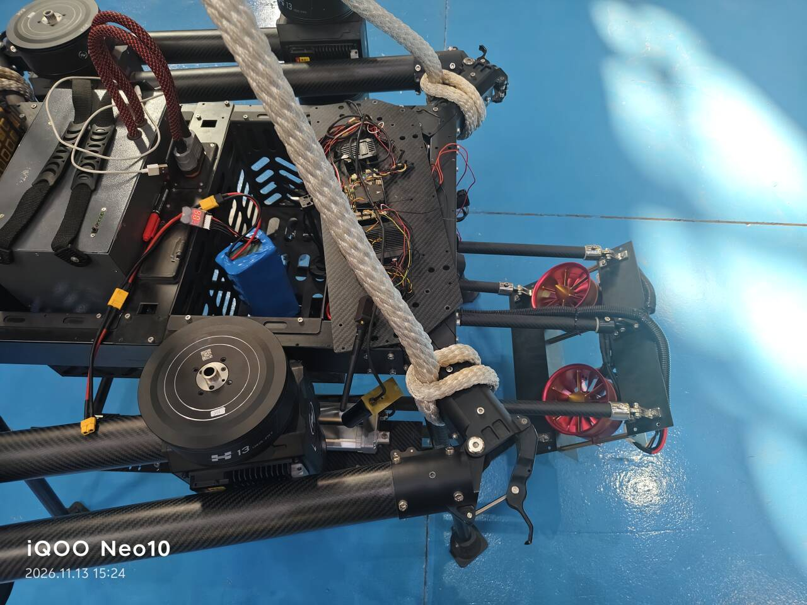
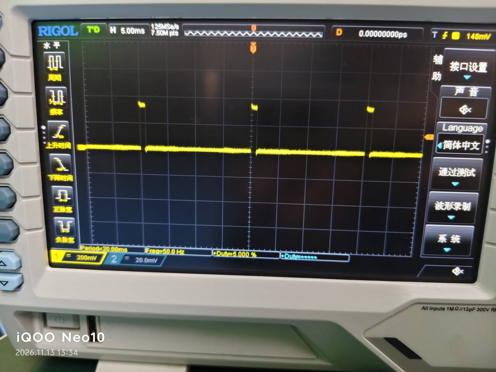
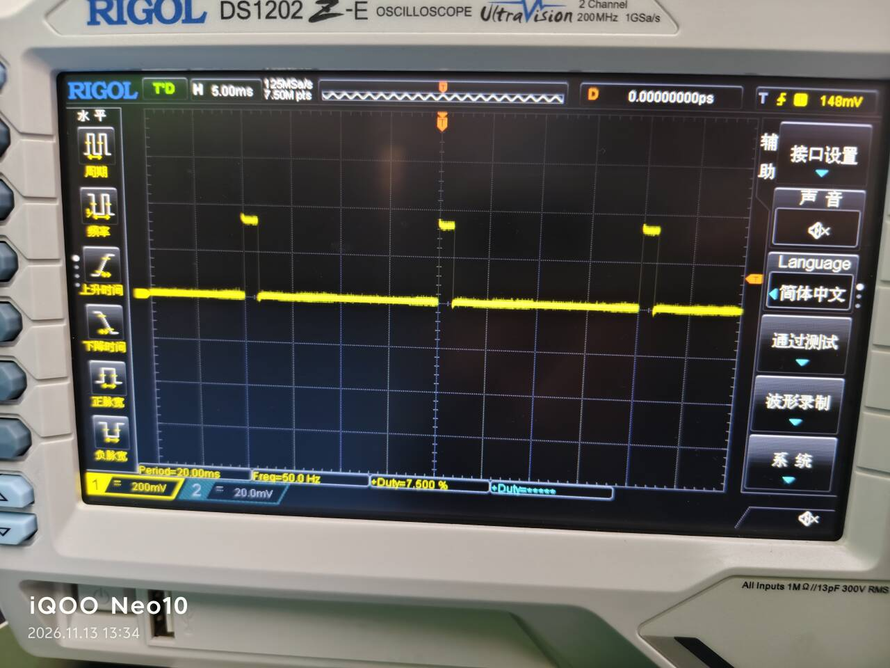
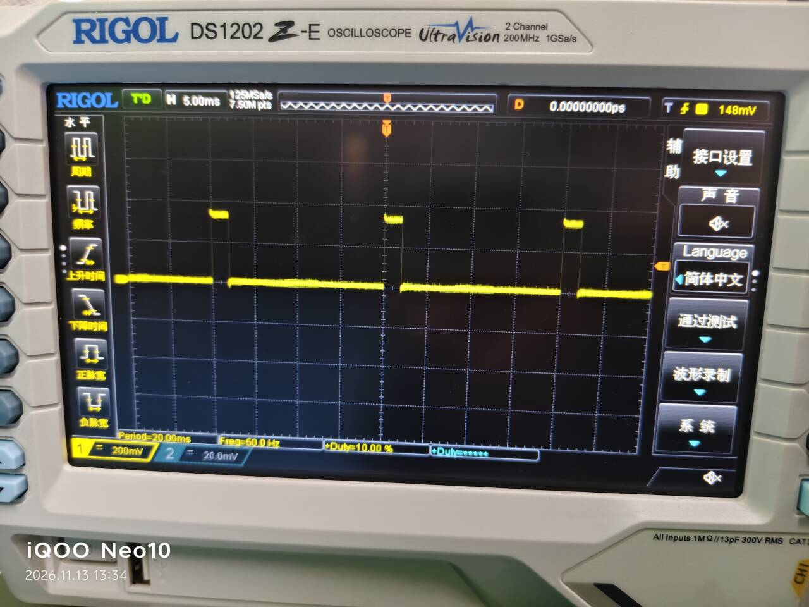

雷电鸟：100 kg 级光伏清洗无人机
给新疆的光伏电站做清洁。当地缺水、不能水洗，板面积灰又直接掉发电量， 所以改成挂着两台涵道风机贴着板面吹。整机 100 kg 级， 飞控做唯一的 PWM 输出者，机载 RK3588 只负责发执行器指令， 遥控器永远是最高优先级。
一、它是什么
为什么要用吹的光伏板的发电量对积灰非常敏感，而新疆的光伏电站普遍缺水——水洗这条路走不通， 人工干擦又不现实（板阵面积太大，且要频繁做）。这台机器的思路是： 飞起来，把两台大功率涵道风机吊到离板面很近的位置，靠气流把灰吹走。

| 部分 | 是什么 | 在这套控制里扮演什么 |
|---|---|---|
| 飞控 | Pixhawk V6X（fmu-v6x） | 唯一的 PWM 输出者。所有执行器动作最终都由它变成电信号 |
| 机载电脑 | RK3588 / Ubuntu 22.04 | 跑仲裁进程，经以太网发 DO_SET_ACTUATOR；不做任何 PWM 输出 |
| 清洗执行器 | 两台涵道风机（挂架下方） | 接飞控 AUX3，转速可调，有软件限速 |
| 升降机构 | 可伸缩挂架 + 驱动器 | 接飞控 AUX2，驱动器只认三个值：1000 / 1500 / 2000 |
| 遥控器 | 2.4 GHz，CH6 三档开关 + CH11 比例通道 | 最高优先级。随时可以夺走控制权 |
二、控制链路
为什么不让板子直接驱动| 方案 | 做法 | 为什么没选 / 选了 |
|---|---|---|
| A | 板子直接驱动电调 / 继电器，绕开飞控 | 板子崩了没有任何兜底，且拿不到飞控的失效逻辑 |
| B | 遥控器直通 AUX 口，板子只做监听 | 板子没法控制，三档量的自动化无从谈起 |
| C ✅ | 飞控做唯一 PWM 输出者，板子只发执行器指令 | 选它。不是因为代码少，是因为它自带一整套失效语义： 断链默认值、上电预解锁、信号丢失归零、遥控器优先级—— 这些都不需要我自己实现，而且已经被无数架飞机验证过 |
三、通道分配
两个执行器，两组参数| 输出口 | PWM_AUX_FUNC |
功能 | MIN / 中位 / MAX | 遥控器映射 |
|---|---|---|---|---|
| AUX2 | 302 |
Offboard Actuator Set 2 · 伸缩杆 | 1000 / 1500 / 2000 | RC_MAP_AUX2 = CH6（三档开关） |
| AUX3 | 303 |
Offboard Actuator Set 3 · 涵道风机 | 1000 / 1300 / 1600 | RC_MAP_AUX3 = CH11（比例通道） |
302 和 303 差一个数字就是另一个执行器——选错了，界面上都显示"已配置"，
但板子发下去的指令会落在没人听的通道上。所以确认只认 probe 读出来的飞行器内部状态：
--- AUX (FMU A1-An) --- 口 功能 MIN 中点 MAX 失能值 2 Offboard Actuator Set 2 1000 1500 2000 1000 3 Offboard Actuator Set 3 1000 1300 1600 1040 6 RC AUX 6 1000 1500 2000 1000 已配 Offboard Actuator: AUX2=Set2, AUX3=Set3
另一个必须记住的点：PWM_AUX_FUNC* 这类参数只在飞控启动初始化 PWM 输出时读一次。
改完不重启，界面显示已保存，实际还是旧的行为。
四、控制语义
五条，每条都能一句话说完这五条是这个项目里唯一被推翻过三次的部分，也是唯一"必须能被一句话讲清"的部分。 现在的版本没有任何模式参数——因为需要使用者理解内部状态才能正确设置的开关，本身就是缺陷。
| 规则 | 具体行为 | 为什么是这样 |
|---|---|---|
| 遥控器最高优先 | CH11 / CH6 一动，立刻抢走控制权 | 人在现场看得见实物，人必须能盖过程序 |
| 夺权即作废 | 遥控器离开中位那一刻，板子此前那条指令清零 | 只做"这一拍听我的"，松手后旧指令会复活——最危险的一类行为 |
| 松手即停 | 回中位 → 停在原地，不回键盘上一次设的值 | 弹簧杆上回弹就是"我要停"，不该有第三种解读 |
| 超时防堵转 | 同方向连续运行超过阈值 → 强制回中位，需回中位才解锁 | 机械限位挡得住位置，挡不住电流。顶死时电机仍在通电发热 |
| 限速最后截 | 上限 1400 us，对遥控器和键盘两条通道同时生效 | 限速如果只在某一条路上做，另一条路就是绕过它的后门 |
五、实测数据
示波器夹在输出口上量的所有"指令是否正确"的讨论，最后都必须落到一根线上有没有对的电平。 三张截图是同一次测量里三个不同的指令值——看的是周期没变、高电平宽度在变： 这正好证明改的是脉宽，不是频率。
| 指令 | 示波器读数 | 换算 | 结论 |
|---|---|---|---|
| 6.000 % | 20.00 ms 周期 / 1.200 ms 高电平 | 20 ms × 6% = 1200 us | 低转速 |
| 7.500 % | 20.00 ms 周期 / 1.500 ms 高电平 | 20 ms × 7.5% = 1500 us | 中点 |
| 10.00 % | 20.00 ms 周期 / 2.000 ms 高电平 | 20 ms × 10% = 2000 us | 满量程 |



遥控器通道实测
| 通道 | 物理动作 | 实测值 | 行程 |
|---|---|---|---|
| CH11 | 比例通道推到底再拉到底 | 1050 → 1950 | 900 us 连续可调 |
| CH6 | 三档开关：上 / 中 / 下 | 1050 / 1500 / 1950 | 三个点，中间不线性 |
CH6 这三个值和驱动器认的 1000 / 1500 / 2000 对不上，所以必须做量化： 遥控器给什么都在中位 ±200 us 之外按方向取端点，中间一律当停。 不量化、直接透传，驱动器收到 1050 会当成"未知档位"，行为不可预期。
六、上机验收
通过的和没通过的，都列出来| 项目 | 判据 | 结果 |
|---|---|---|
| 板子能控杆 | rod up / rod down 杆按方向动 |
✅ 通过 |
| 中位真能停 | 1500 us 时杆完全静止、无蠕动无嗡嗡声 | ✅ 通过 |
| 三档量化 | CH6 给 1050/1950，实际下发 1000/2000 | ✅ 通过 |
| 遥控器夺权 | 拨杆立刻抢走控制权 | ✅ 通过 |
| 夺权后作废旧指令 | 遥控器回中后杆停住，不再接着走板子的旧方向 | ✅ 通过 |
| 超时保护 | 同方向连拨 15 s 打印保护、强制回中、锁定期间拨杆无效 | ✅ 通过 |
| 双路互不干扰 | 控杆时风机转速不受影响 | ✅ 通过 |
| 退出归零 | Ctrl-C / systemctl stop 后风机停、杆回中位 |
✅ 通过 |
| 开机自启 | 断电重启不敲任何命令，服务自己起来接管双路 | ✅ 通过 |
| 全行程秒数 | 掐表量单程用时，用来定 --rod-timeout |
⬜ 未测（暂按 12 s 估） |
| 飞行验证 | 离地、振动、气流、供电波动下是否仍然稳定 | ⬜ 未飞 |
| 硬件兜底 | 限位开关 + 继电器串杆电源，板子死机能自己断电 | ⬜ 未装 |
七、板子上怎么控
服务跑着就能用，不用停服务原理是只往一个文件里写一行字：服务主循环每 50 ms 读一次、读完即删。 所以它不连飞控、不占 14500 端口，能和正在跑的服务天然共存。
| 想干什么 | 命令 | 实际下发 |
|---|---|---|
| 杆向上 | rod up | 1000 us |
| 杆向下 | rod down | 2000 us |
| 杆停 | rod stop | 1500 us |
| 杆给任意脉宽 | rod 1600 | 裁剪到 1000–2000 |
| 风机 35% | fan 35 | 约 1210 us |
| 风机停 | fan stop | 1000 us |
| 临时改限速 | fan cap 1200 | 立刻生效，重启服务后回到 1400 |
| 看状态和日志 | rod status | — |
部署组成
| 文件 | 作用 | 装到哪 |
|---|---|---|
px4_actuator_client.py |
主程序：MAVLink 连接、仲裁、量化、超时保护、文件通道 | ~/px4fan/ |
px4fan.service |
开机自启 + 崩溃重启 + SIGTERM 转优雅退出 | /etc/systemd/system/ |
px4fan.default |
参数文件：开机时脚本收到的全部参数都在这 | /etc/default/px4fan |
rod / fan |
两个快捷命令，只往 ctl 文件写一行 |
/usr/local/bin/ |
install_px4fan.sh |
一键装六个东西：日志目录、参数、服务、轮转、enable、启动 | — |
八、开发手记
5 篇，按依赖顺序这一组不是按时间随手记的，是按依赖顺序写的：结构 → 协议 → 语义 → 设备化 → 排障。 第 5 篇是前四篇的反面，写的全是中间错过的路。
NaN 表示这一路不动；302 和 303 差一个数字就是另一个执行器。
阅读 →
03
谁说了算：被推翻三次的仲裁设计
弹簧杆上「锁住当前速度」不可重复：快弹锁 1300，慢推锁 1081。
阅读 →
04
断电重启之后：把脚本变成设备的一部分
SIGTERM 会跳过 finally，电机不归零；8 个不报错的坑。
阅读 →
05
它动了，但不是我要的动：一次上机的十三次误判
按四层拆开，两次是「因为修错方向而变得更糟」。
阅读 →
九、还没做的
写在最显眼的地方- 没飞过。所有验证都是吊装地面状态。振动、气流、供电波动、 桨叶下洗流对风机的影响，完全是另一套输入。
-
行程没量准。
--rod-timeout现在按 12 秒给， 真实全行程秒数还没掐表测过——这个数是唯一的依据。 - 硬件兜底没装。限位开关 + 继电器还是纸上的方案。
- 没和飞行状态联动。现在的逻辑不知道飞机是在飞还是在地上， "离板面多近才允许开风机"这类判断还没进去。